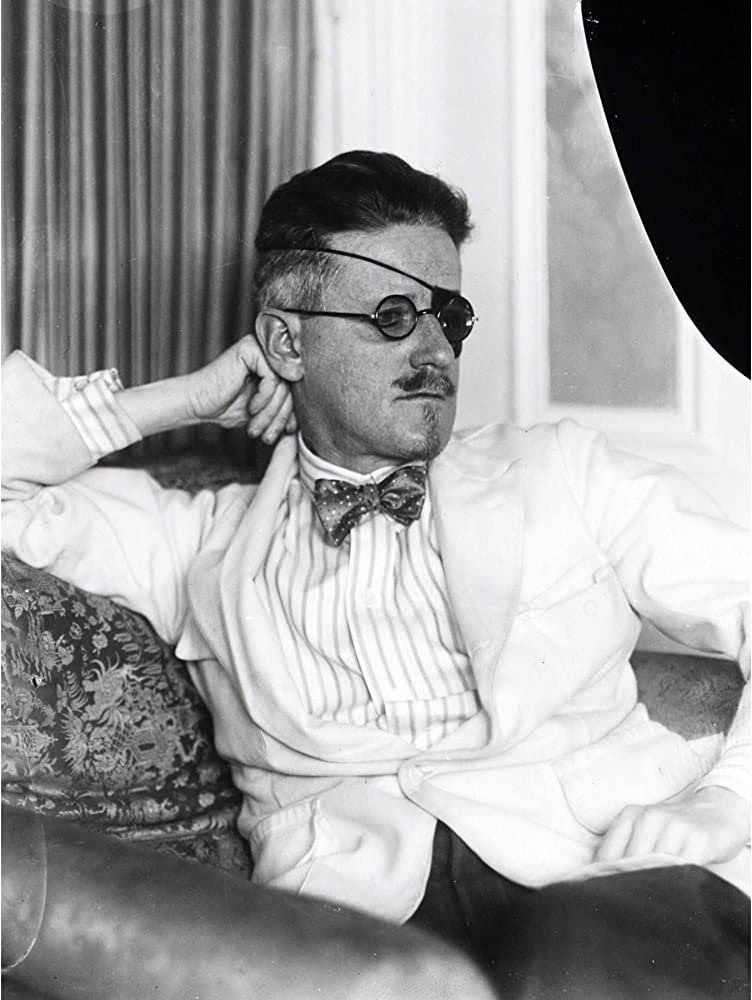

Новини
Геніально, але перемудрив.
Артем Поспєлов «Амок».
Торбина з суспільними негараздами порвалась і, за іронічним збігом обставин, все з неї просипалось на сторінки книги Поспєлова.
Все чого ми прагнемо не помічати, все, що нас лякає, викликає жалість, сум, огиду, страждання,
вводить в шок, дарує прокрастинаційне умиротворення та невидимою ложкою божевільного світу виїдає наш мозок стало
компілятивним матеріалом для цієї книги

Найскладніший текст в англомовній літературі
«Поминки за Фіннеганом» Джеймса Джойса вже давно має репутацію одного з найскладніших і найзагадковіших романів написаних англійською мовою.
Щоб написати цей, опублікований у 1939 році літературний шедевр, Джойсу знадобились вражаючі 17 років.
Роман написаний в унікальному стилі, який поєднує в собі кілька мов, купу каламбурів, алегорій та алюзії на величезну кількість літературних творів, до того ж навіть в наші дні у творі можна знайти багато новаторських ходів. У підсумку, текст Джойса є глибоко заплутаним і важким для розшифровки.
Ні, його дійсно важко дешифрувати, бо Джойс буквально сховав в тексті купу шифрів, які складають ще один текст.
Спроба зрозуміти усі сенси «Поминок за Фіннеганом» призвела до початку широкомасштабного наукового аналізу та дебатів,
де одні літературознавці й критики вітали цей роман як геніальний твір, а інші відкидали його як кіч заради кічу.
Сюжет, якщо його можна так назвати, обертається навколо думок і повсякденного життя ірландського митаря на ім’я Хамфрі Чімпден Ервікер (ХЧЕ), його дружини Анни Лівії Плюрабель (АЛП) і їхніх трьох дітей. Історія зачіпає теми історії, релігії,
політики та сімейних взаємовідносин, хоча саме мовні лабіринти займають провідне місце та формують цінність цього твору.
Намір Джойса, з яким він писав «Поминки за Фіннеганом», полягав у тому, щоб створити твір, який виходив би за межі традиційної літератури та залучав би читачів в історію новим способом. Автор вважав, що саме такий підхід спонукатиме до найглибших роздумів.
Для багатьох роман є випробуванням на інтелектуальну витривалість і демонстрацією безмежних можливостей мови.
На жаль, роман не виданий українською, але в оригіналі має 600+ сторінок. Цей твір Джойс почав писати одразу після Улісса.
Він же став останнім прижиттєво опублікованим твором.

«Клуб невиправних оптимістів», Жан-Мішель Ґенассія
Парижанин Мішель Маріні – головний герой роману, йому 12 років, він любить грати у крикет, фотографувати, читати та слухати музику. Навчання в ліцеї, родинний конфлікт, розлучення батьків, зникнення брата, зрештою, взагалі життя — дається досить важко. Та в один момент він випадково потрапляє в таємну кімнату бістро,
де знайомиться з невиправними оптимістами та інтелектуалами,
які, щоб врятувати своє життя, перетнули залізну завісу
Ця зустріч раз і назавжди змінила життя Мішеля.
Він не тільки навчиться вправно грати в шахи, а й зрозуміє, що таке справжня дружба і любов.

Рецензія на Дякую за куріння
Це не книга. Це сценарій для фільму братів Коенів: жарти, антураж, персонажі, навіть кінцівка в їх стилі.
Жарти у книзі настільки ж гарячі, як щойно запалена цигарка. Але смішать тут не тільки конкретні строки, але й сам абсурд ситуації. В книзі нема позитивних (проте, є приємні) персонажів, всі герої, від головних до епізодичних,
морально гидкі. Хоча, це не заважає вболівати за деяких з них.
«Дякую за куріння» — це звісно сатира, але не те щоб надто карикатурна. Автор, Крістофер Баклі — політичний журналіст, який все життя крутиться в компанії еліти США. Саме через це йому вдається передати характер, манеру розмови та навіть ауру сильних світу цього.
Якщо трохи почитати про те, як працює лобізм в Америці, то виявиться, що вигаданого тут не так багато.
Нашому суспільству може бути не так притаманна капіталістична корпоративна культура, але ця історія не так про іронію над системою Штатів, як про дволику природу людини. В нас нема лобістів, які захищають диявола заради грошей, але є «журналісти», які готові удавитись за свого господаря-олігарха. Тому архетипи з книги дуже впізнавані та актуальні для українського сьогодення.
Книга так сподобалась, що тепер хочеться почитати й інші книги автора